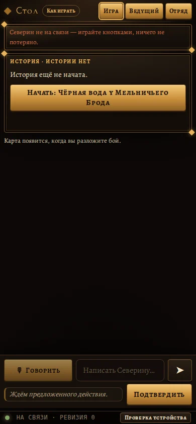
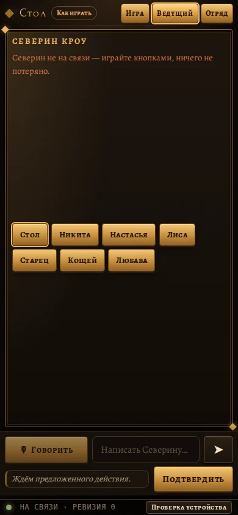
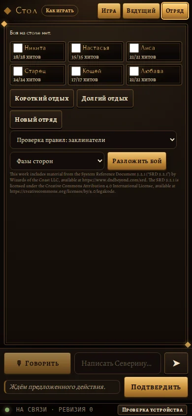
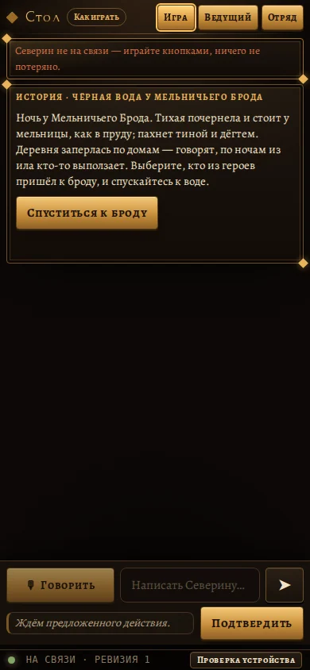
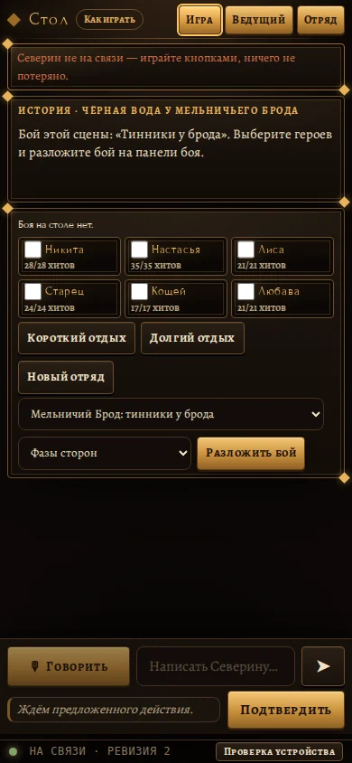
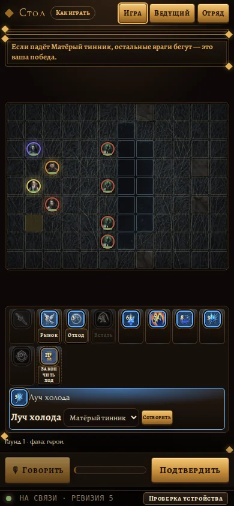
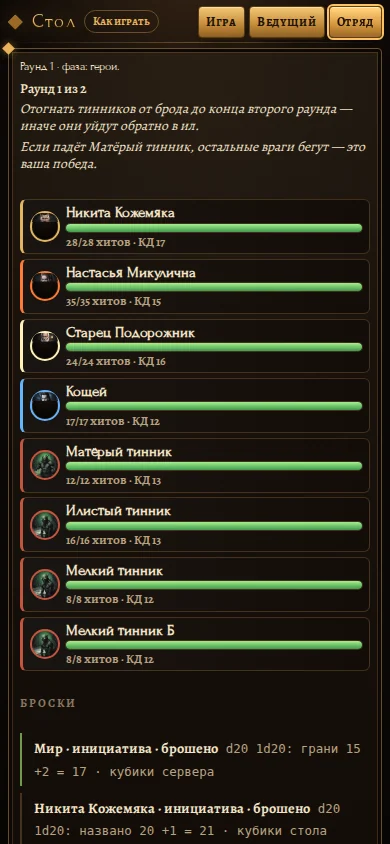
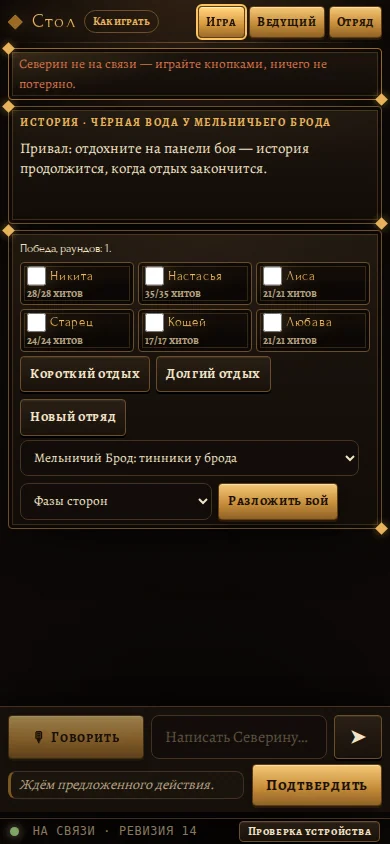
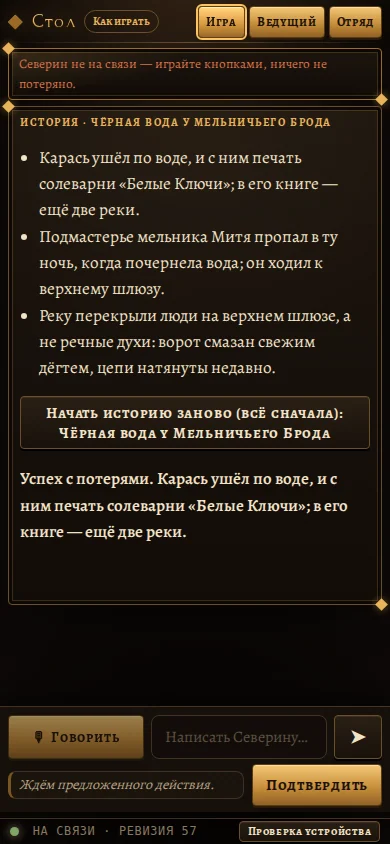

То же, что стол игрока, но в одну колонку и с вкладками «Игра / Ведущий / Отряд». В бою нажат герой — открыта его панель умений.
№02ПодготовкаТелефон — начало, вкладка «Игра»

Вверху название «Стол», кнопка «Как играть» и три вкладки. Под красной плашкой про то, что Северин не на связи, одна карточка: история не начата и большая кнопка «Начать: Чёрная вода у Мельничьего Брода». Внизу «Говорить», строка для письма Северину и «Подтвердить».
Бросается в глаза- Почти весь экран пустой и тёмный: между карточкой и нижней панелью огромный провал.
- Подпись «Карта появится, когда вы разложите бой» мелкая и тусклая, почти не читается.
- Красная плашка занимает место на каждом экране; после первого прочтения её можно сделать компактнее.
- «Ждём предложенного действия» и «Подтвердить» не показывают, что сейчас нечего подтверждать (кнопка выглядит активной).
№06ПодготовкаТелефон — начало, вкладка «Ведущий»

Окно общения с Северином Кроу. Сверху сообщение, что он не на связи. В середине ряд кнопок-адресатов: Стол, Никита, Настасья, Лиса, Старец, Кощей, Любава. Внизу те же поле ввода и «Подтвердить».
Бросается в глаза- Кнопки адресатов висят посреди пустого окна без подписи, непонятно, что это выбор «кому говорит Северин».
- Огромное пустое поле над кнопками; истории разговора нет.
- Кнопки идут неровными рядами разной длины, выглядят случайно.
№07ПодготовкаТелефон — начало, вкладка «Отряд»

Список шести героев с очками здоровья и белыми галочками для выбора в бой. Ниже кнопки «Короткий отдых», «Долгий отдых», «Новый отряд», выбор проверки правил и сцены боя и кнопка «Разложить бой». Внизу мелкий юридический текст про лицензию.
Бросается в глаза- Белые стандартные флажки и серые выпадающие списки выбиваются из золотисто-тёмного оформления.
- Юридический текст мелкий, красноватый и плохо читается; он занимает место сразу под рабочими кнопками.
- Кнопки отдыха и «Новый отряд» выглядят одинаково с безопасными действиями; «Новый отряд» легко нажать случайно.
- Строка «Боя на столе нет» очень мелкая.
№10ИсторияТелефон — история, вкладка «Игра»

В карточке истории описана ночь у Мельничьего Брода и есть кнопка «Спуститься к броду». Сверху плашка, что Северин не на связи. Внизу обычная панель с голосом, письмом и «Подтвердить».
Бросается в глаза- Текст хорошо читается, но под ним снова огромная пустая тёмная область.
- Единственная кнопка действия одна и небольшая; можно сделать её шире, как на первом экране.
- Нет картинки или иллюстрации сцены, экран выглядит как простой текст.
№16Перед боемТелефон — перед боем

Сверху текст, что бой — «Тинники у брода», нужно выбрать героев и разложить бой. Ниже панель боя: шесть героев с галочками, кнопки отдыха, выбор сцены, выбор «Фазы сторон» и «Разложить бой».
Бросается в глаза- Стандартные белые галочки и серые выпадающие списки выглядят сырыми.
- Сразу три кнопки отдыха и нового отряда стоят рядом с главной «Разложить бой», главное действие теряется.
- Мелкие подписи «Боя на столе нет» и «хитов» трудно читать с руки.
- Две карточки с золотыми уголками слегка ломают ритм: рамки разные по высоте.
№24БойТелефон — бой, вкладка «Игра»

Сверху цель боя, под ней карта-сетка с фишками героев и тинников. Ниже ряд значков способностей (Рывок, Отход, Встать, «Закончить ход» и заклинания) и выбранная способность «Луч холода» с выбором цели и кнопкой «Сотворить». Внизу «Говорить» и «Подтвердить».
Бросается в глаза- Значки способностей очень мелкие, подписи под ними 8–9 px, у некоторых обрезаны («За кон чить ход» переносится по слогам).
- Карта тёмная, клетки и фишки слабо различимы, цвета врагов и героев почти не отличаются.
- Недоступные способности просто серые, нет подсказки почему.
- Строка «Раунд 1 · фаза: герои» мелкая и жмётся в угол.
- Кнопка «Сотворить» маленькая, на телефоне легко промахнуться.
№28БойТелефон — бой, вкладка «Ведущий»
Та же страница общения с Северином, что и до боя: сообщение, что он не на связи, и ряд кнопок адресатов. Внизу панель ввода.
Бросается в глаза- Во время боя тут ничего нового: нет ни реплик Северина, ни истории разговора.
- Огромное пустое поле, кнопки адресатов без подписи, что это такое.
- Экран ничем не отличается от стартового, нет признаков, что идёт бой.
№29БойТелефон — бой, вкладка «Отряд»

Сверху раунд 1 из 2 и цели боя. Дальше список участников боя: четыре героя и четыре тинника, у каждого портрет, полоса здоровья, очки хитов и класс защиты. Внизу начинается раздел «Броски» с записями о результатах инициативы.
Бросается в глаза- Полосы здоровья у всех зелёные и одинаково длинные, видно мало разницы между героями и врагами, кроме цвета рамки слева.
- Портреты мелкие, враги похожи друг на друга.
- Записи в «Бросках» мелкие и обрезаны внизу; в них странные подписи вроде «d20 1d20: грани 15».
- Не видно, чей сейчас ход.
№31ПривалТелефон — привал

Карточка с текстом «Привал: отдохните на панели боя». Ниже панель отряда с победой за 1 раунд, шесть галочек героев, кнопки короткого и долгого отдыха, «Новый отряд» и выбор сцены с «Разложить бой».
Бросается в глаза- Белые галочки и серые списки не вписаны в оформление.
- Кнопки отдыха, ради которых этот экран, выглядят так же, как все остальные, не выделены.
- Фраза «Победа, раундов: 1» мелкая и теряется.
- Под панелью пустая область.
№36ФиналТелефон — концовка

Карточка истории с итогом: три пункта про Карася, пропавшего подмастерья и перекрытую реку, потом кнопка «Начать историю заново (всё сначала)» и жирная строка «Успех с потерями». Внизу обычная панель.
Бросается в глаза- Кнопка «Начать заново» стоит прямо под текстом и похожа на обычный пункт, её легко нажать случайно.
- Итог «Успех с потерями» дублирует первый пункт и стоит в конце, а не заголовком.
- Нет оформления финала: ни картинки, ни крупного заголовка.
- Нижние кнопки «Говорить» и «Подтвердить» остались, хотя игра закончена.